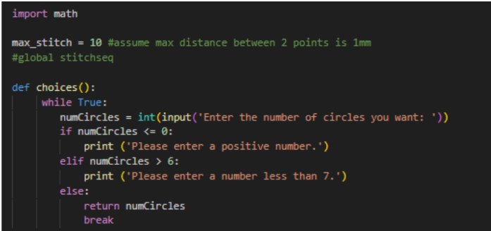
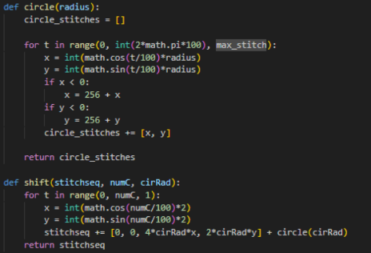
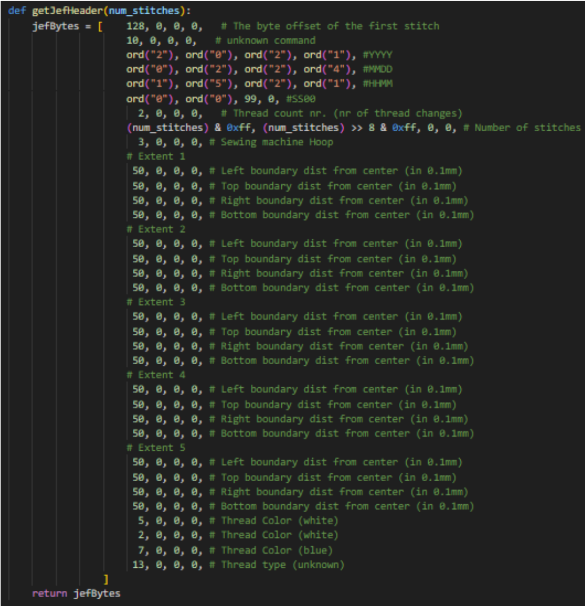
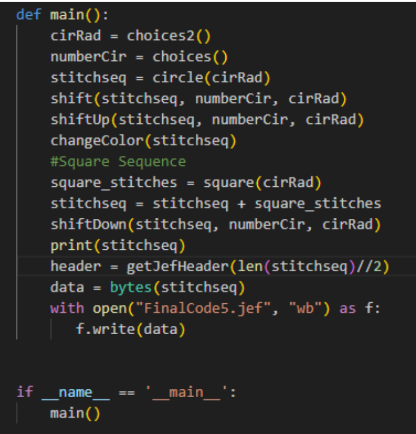
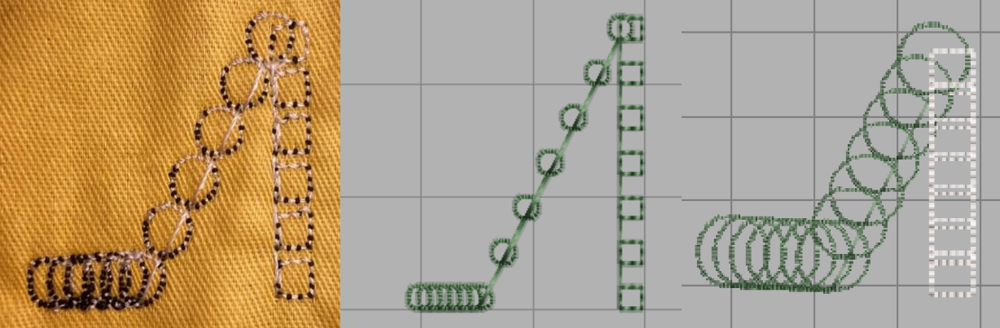

Step 1
You need to import the Math Toolbox into Python to be able to use Pi for Circles. In this code, the choices function asks for user input to give the code a number of circles.

Step 2
Next you need to ensure your code doesn't just print out random numbers. This code ensures that the bytes will never be negative. It also takes the number of circles, and shifts the coordinates over to give an overlapping effect.

Step 3
Finally, you need code that turns our various functions into a JEF file that can be read by an Embroidery Machine.

Step 4
Actually, the last step is to run all your various user input dependent functions, and output them as a JEF file, which is what this code does here.
Step 5 and 6
Finally, check your JEF file in a program like Hatch, and set up your embroidery machine with that file.

Youtube Video Below!
Examples of stitches that can be made and an accompanying Youtube Video: